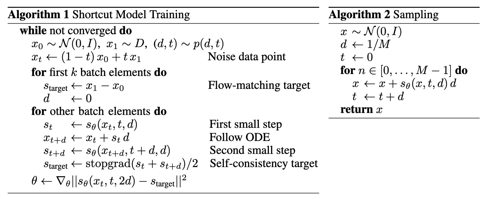

Shortcut Models
背景知识
扩散模型最明显的短板就是迭代式生成的效率太低，为此人们做出了非常多的努力，大致可以概括如下：
- 改进采样器：提出 DDIM, Euler, Heun, DPM-Solver 等一阶或高阶 ODE 求解器。这类方法的优点在于无需训练，但是很难在 10 步采样以内保持图像质量。
- 模型蒸馏：预训练扩散模型作为老师，蒸馏一个采样步数更少的学生模型，代表工作包括 Progressive Distillation, Consistency Distillation, Reflow 等。这类方法可以保证几步甚至一步生成的图像质量，但是训练流程麻烦，不是端到端的。
- 构建新的模型族：基于扩散模型的理论设计新的模型族，代表工作包括 Consistency Training，以及本文介绍的 Shortcut Models. 这类方法可以端到端从头训练，同时支持一步或多步生成，是很有潜力的研究方向。
在正式开始介绍 Shorcut Models 之前，有必要简单回顾一下 Flow Matching. 对训练的每一步，Flow Matching 首先从源分布和目标分布中分别采样 \(x_0,x_1\)，然后做线性插值 \(x_t=(1-t)x_0+tx_1\)，模型 \(v_\theta\) 以 \(x_t\) 为输入，预测速度方向 \(v_t=x_1-x_0\)，即： \[ \mathcal L^F(\theta)=\mathbb E_{x_0,x_1\sim\mathcal D,\;t\sim U[0,1]}\left[\Vert v_\theta(x_t,t)-(x_1-x_0)\Vert^2\right] \] 考虑某个特定的 \(x_t\)，它在整个训练过程中可能被不同的 \((x_0,x_1)\) 对采样出来，每次回归一个速度方向，于是最终收敛到“平均速度方向”： \[ v_\theta^\ast(x_t,t)=\mathbb E[v_t\vert x_t] \] 训练结束后，模型 \(v^\ast_\theta(x_t,t)\) 给出了空间中的一个速度场，从源分布中的任一点出发，沿该速度场运动就完成了一次采样。值得注意的是，由于模型最终学习到的是平均速度，因此采样轨迹是弯曲的，这导致大步长采样存在较大的离散误差，如下图所示。极端情况下，如果我们做一步采样，那么采样出来的其实是数据集的平均点，即 \(x_0+\mathbb E[v_0\vert x_0]\cdot 1=\mathbb E[x_1\vert x_0]=\mathbb E[x_1]\).

方法介绍
核心思想
Shortcut Models 的核心思想是将采样步长 \(d\) 作为条件加入网络，使得网络能够考虑到采样轨迹的曲率，进而给出跨出 \(d\) 步长后准确的位置。直观上，Flow Matching 可以解释为学习瞬时速度，而 Shortcut Models 意在学习 \(d\) 时间内的平均速度。若模型得到了充分的学习，那么当 \(d=1\) 时，模型就给出了跨越整条采样轨迹的速度方向，从而实现一步采样。

具体而言，记 \(s(x_t,t,d)\) 表示 \(t\) 时刻位于 \(x_t\) 处且步长为 \(d\) 的 shortcut，定义为： \[ x_{t+d}=x_t+s(x_t,t,d)d \] 不难发现它具有两条性质：
极限性质：当步长无限小时，平均速度趋向于瞬时速度，此时 shortcut 就是 Flow Matching 中的速度场： \[ \lim_{d\to 0}s(x_t,t,d)=\lim_{d\to0}\frac{x_{t+d}-x_t}{d}=\dot x_t \]
自一致性：跨一个 \(2d\) 步长等价于先跨一个 \(d\) 步长、再跨一个 \(d\) 步长： \[ s(x_t,t,2d)=s(x_t,t,d)/2+s(x_{t+d},t+d,d)/2 \]
接下来我们只需要训练一个神经网络 \(s_\theta(x_t,t,d)\) 去近似 \(s(x_t,t,d)\) 即可。
模型训练
基于 shortcut 的两条性质，我们可以设计如下的损失函数： \[ \begin{gather} \mathcal L^S(\theta)=\mathbb E_{x_0\sim\mathcal N,\,x_1\sim \mathcal D,\,(t,d)\sim p(t,d)}\Big[ \underbrace{\Vert s_\theta(x_t,t,0)-(x_1-x_0)\Vert^2}_{\text{Flow Matching}} + \underbrace{\Vert s_\theta(x_t,t,2d)-s_\text{target}\Vert^2}_{\text{Self-Consistency}} \Big]\\ \text{where}\quad s_\text{target}=s_\theta(x_t,t,d)/2+s_\theta(~\underbrace{x_t+s_\theta(x_t,t,d)d}_{x'_{t+d}}~,t+d,d)/2 \end{gather} \] 可以看见损失函数由两部分构成，分别对应极限性质和自一致性。直观上，Flow Matching 部分保证在小步长下模型给出的轨迹贴合真实的采样轨迹，而自一致性部分保证模型在大步长下的轨迹逼近小步长下的轨迹。二者联合训练，实现单阶段、端到端的从头训练。
Shortcut Models 的训练过程可以解释为一个自蒸馏的过程：如果我们分阶段训练不同步长，先训练小步长，再训练大步长，那不就是 Progressive Distillation 吗！从这个角度上说，Shortcut Models 也可以视作 Progressive Distillation 的端到端训练版本。
虽然理论简单，但是实践中作者引入了不少工程设计：
- 时间离散化：尽管理论上 \(d\) 可以取连续值，但作者只在离散时间步上训练自一致性。具体而言，步长 \(d\) 采样自 \(\left\{1/128,1/64,\ldots,1/2,1\right\}\)，而时间步 \(t\) 取为 \(d\) 的倍数。
- 批次分比例优化：对一个 batch 的数据，取其中 \(3/4\) 用于训练 Flow Matching，剩下 \(1/4\) 用于训练自一致性。由于自一致性的目标 \(s_\text{target}\) 包含额外的前向传播，因此训练代价比 Flow Matching 部分更高，设置比例后可以保证整个训练代价比普通的扩散模型训练仅多出 16% 左右。
- 提前确定 CFG：由于自一致性涉及到生成目标 \(s_\text{target}\)，因此原本不需要在训练时确定的超参数（如 CFG）需要提前确定下来。
- 使用 EMA 权重：同样的道理，生成目标 \(s_\text{target}\) 时需要用维护的 EMA 模型生成。
- 调节 weight decay：作者发现 weight decay 对训练的稳定性至关重要，这是因为训练早期 \(s_\text{target}\) 无法给出有效的目标，影响收敛，调节合适的 weight decay 可以缓解不稳定性。
训练及采样算法如下图所示：
